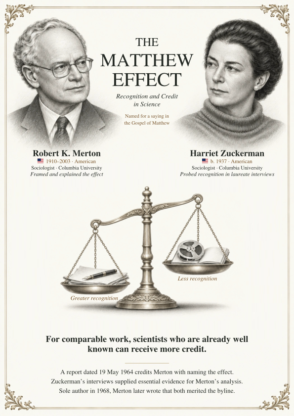
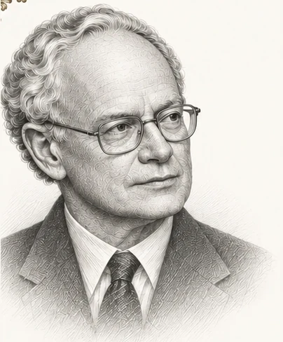
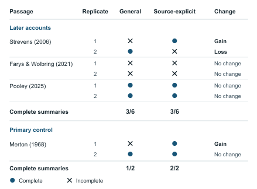

Who gets remembered?
Robert K. Merton was the sole author listed on the 1968 Science paper “The Matthew Effect in Science”. Its opening paragraph identifies the interviews conducted by Harriet Zuckerman as part of the study’s empirical basis. Carry forward only the byline and that contribution disappears from view. Yet the Wikipedia revision of 1 November 2026 names both scientists and says that they coined the term together in 1968. It gives Zuckerman a different role from the one described by the participants and places the naming four years after a contemporary newspaper attributed it to Merton.3 6 8 10
The puzzle is how credit changes on its way from research to public memory. A citation can correctly identify a paper and leave out the work that made it possible. Even an account that restores a contributor’s name can assign that person a different contribution. The distinction matters for anyone trying to reconstruct how a scientific term acquired its meaning and who did the work behind it.
In Merton’s 1968 account, a scientist’s established reputation can increase the credit and visibility their work receives when contributions are comparable. Unequal recognition is an outcome of that status-dependent process. In 1988, Merton extended the analysis to cumulative advantage, asking how earlier recognition and resources improve access to later opportunities. The history of the term poses a separate question about who contributed to naming and explaining the effect.3 4
The evidence changes the starting point
On 5 February 1964, Robert K. Merton gave an NIH lecture, listed among meetings held in the Clinical Center’s annual report. In 1988 Merton recalled briefly presenting the central idea at that lecture. The words he used remain unknown. A dated record of what he said could establish earlier oral use. Moving the earliest public print attestation before May would require locating an earlier publication using “Matthew effect” in the same scientific-credit sense.4 20
In the Statesman of 19 May 1964, Charles Mindel and Doris Bondy’s report “Merton Speaks” describes Robert K. Merton discussing “the social phenomenon that he names the ‘Matthew Effect’” (p. 6). The continuation on p. 7 explains the misallocation of credit for scientific contributions and connects the name to the Book of Matthew. This is the earliest public print witness located here for the expression in its scientific-credit sense, and a contemporary attribution of naming to Merton.6
The report gives us more than an announcement: it describes a lecture as having taken place. Its issue date is secure, but its opening “On Friday May 13” contains a weekday/date conflict. We retain that wording. An earlier issue (5 May, p.11) advertised a Merton lecture for 15 May at 4:45 p.m. in the humanities building faculty lounge. It gives neither full name nor title, so its connection to the reported lecture remains provisional and cannot settle the delivery day.7 The report does not establish the first-ever utterance or exclude other contributors to the concept. An AAAS notice printed in Science on 16 October 1964 (p. 437) adds a different connection: Merton's paper, Zuckerman's interviews with Nobel laureates, and recognition in joint publications. The December programme then lists Merton's “The Matthew effect and visibility of scientific communication” for the morning of 27 December, with Zuckerman separately listed on laureates' collaboration. These are distinct witnesses to reported performance, printed explanation and an announced presentation.1 2 6
A programme is not a clock recording a talk
The 1967 ASA programme offers another connection. On printed page 51 (PDF page 26), Sociology of Science, Session 94 lists four contributions in order: Randall Collins; Stephen Cole and Jonathan Cole; Harriet Zuckerman; and Robert K. Merton. Zuckerman's listed paper is "Pattern of Name-ordering Among Authors of Scientific Papers: A Study of Social Symbolization and Its Ambiguity"; Merton's is "The Matthew Effect in the Reward and Communication Systems of Science". The titles invite an intellectual comparison between a practice of allocating symbolic credit and a broader account of recognition. They do not establish an announced joint project, or supply the full argument of Zuckerman's listed paper.5
Merton's 1968 author note separately says that the article was based on a paper read before the ASA in San Francisco in August 1967; its final note also reports earlier versions presented before NIH and AAAS, without dating them. The programme documents a schedule, while these statements retrospectively report performance. The programme's 3:30 p.m., Rosewood heading belongs to Session 94, not to an individually timed paper. It cannot establish the moment at which its fourth listed contribution began. The May 1964 newspaper report gives a separate contemporary performance witness, with the precise lecture day unresolved.3 5 6
One byline, more than one contribution
Merton’s sole byline appears on p. 56 of the January 1968 Science article. On that same page, the opening paragraph identifies “Harriet Zuckerman’s interviews with Nobel laureates” alongside letters, diaries and other materials used in the analysis. In her own account, Zuckerman describes an investigative decision. When laureates repeatedly spoke of receiving disproportionate credit, she pressed them for specific instances in their work and in the work of others. She wrote that the interviews “provided necessary evidence for his analysis” (2011, p. 131) and added that they were insufficient on their own. She credited Merton with identifying the clearest cases, naming the phenomenon and explaining the mechanisms. Her questions helped establish the pattern that required an explanation.3 8

Robert K. Merton

- Identity
- Robert King Merton · 1910–2003 · Sociologist, Columbia University
- Contribution
- A newspaper report dated 19 May 1964 attributes the naming of the effect to Merton. He was the sole listed author of the 1968 paper. His later judgment that the paper warranted joint authorship concerned the extent of his reliance on Zuckerman’s research.
Harriet Zuckerman

- Identity
- Harriet Anne Zuckerman · Born 1937 · Sociologist, Columbia University
- Contribution
- Zuckerman recalled a pattern in what laureates told her and asked how credit had been allocated in specific cases. Merton used those interviews in the 1968 analysis. She credited him with naming and explaining the pattern.
The later acknowledgment
In Isis (1988, p. 607, n. 2), Merton quotes an acknowledgment he dates to 1973. He says that he drew on Zuckerman’s interviews and other materials to such an extent that “the paper should have appeared under joint authorship”.4
The acknowledgment also appears in the copy of The Sociology of Science examined here. On p. 439, note 1, Merton dates his addition to 1973 and says that his use of Zuckerman’s research warranted joint authorship. The copyright page identifies the first publication year as 1973 and its number line identifies this copy as a later printing. Merton’s letter to Dorothy Swaine Thomas dated 28 September 1973 records sending her a photocopy of the chapter in page proofs. The letter dates the circulation of a proof. It does not reproduce the footnote she received. The first printing and the earliest circulation of the joint-authorship wording remain unverified.4 27
Could an automated summary tell which document supports Merton’s account? We paired the 1968 byline with one of three records and reversed their order. Six summaries were asked to identify the source and edition. Six others were asked separately which document supplied the evidence and which work it described. All four summaries given the 1988 quotation identified it as retrospective testimony. Neither instruction prompted a claim that the model had seen the earlier page (0/2 under each instruction). All four summaries given the later printing’s note identified that printing as the witness. All four given the proof letter withheld judgment about Merton’s view on joint authorship. All twelve preserved the single-author byline. The passages identified their sources, and the later-printing passage explicitly stated that the first printing had not been checked. Under these conditions, separating the questions yielded no observed improvement.36
A small change in how a source is transcribed can supply a contributor the source itself leaves unnamed. In his 1973 letter, Merton says he photocopied a proof. The names in it “had been underlined for purposes of indexing”. The letter does not say who marked them. In two document orders, we gave a reader the original wording, an earlier paraphrase that said Merton had underlined the names, or the same paraphrase corrected to leave the actor open. Both summaries given the earlier paraphrase credited Merton with the underlining. All four given the transcription or corrected paraphrase explicitly said the actor could not be identified. Across fourteen summaries, including controls concerning the later printing and the 1988 account, every answer preserved the sole published byline. The mistake in this letter could therefore enter a summary even when the model read its supplied text faithfully.37
What happened to that acknowledgment when the paper entered bibliographies? In the very volume that prints it on p. 439, the bibliography on p. 564 lists the article without naming Zuckerman. We can also see how Merton himself cited the work. In 1995, Merton cited the 1973 reprint under both names in the body of his paper (p. 382). In the corresponding reference he placed Zuckerman’s name in brackets (p. 420). The online bibliography compiled by Poros and Needham adds “[with Harriet A. Zuckerman]” to entry 99. The title and date identify the same article, even though the entry on p. 564 and the online entry both give the volume and opening page incorrectly. In 2011 Zuckerman also recalled appearing as coauthor in the compilers’ 2004 bibliography. We checked the online entry directly. Its date of revision and the path by which the annotation reached it remain open.3 4 8 26 27
Readers following these records encounter three different answers to three different questions. Merton signed the published article. He later considered that the work warranted joint authorship. His own later citation to the reprint named Zuckerman, as did the compilers’ entry for the journal article. Zuckerman herself recalled that she had never asked for a byline change. These records show how researchers encountering the same work through different references could see different names.3 4 8 26 27
Why were the Fiesers proposed?
An earlier use of the biblical verse raises a different question. On p. 63, note 50, Merton says Richard L. Russell had “come upon the manuscript of this paper” and called his attention to Louis F. and Mary Fieser’s Introduction to Organic Chemistry (1957). According to Merton, a footnote there quotes Matthew 25:29 alongside a chemical rule. His account places Russell’s communication after a manuscript existed. It leaves open whether the draft already contained the expression and when the exchange took place. For the textbook to move the May 1964 print date, its own pages would have to show an earlier use of the expression for the allocation of scientific credit.3 6
In January 2005, Sam Silverman recalled encountering the verse as a graduate student in the 1944 Organic Chemistry by Louis F. Fieser and Mary Fieser. N. David Mermin took the priority question seriously and asked for a page. In April he reported that p. 119 of the 1950 edition quotes the verse alongside a chemical rule and does not use the expression “Matthew effect”. He withdrew the suggestion of sociological priority and credited Robert K. Merton with applying the verse to scientific priority. This establishes what changed Mermin’s judgment. These are three different edition claims. Silverman remembered a passage in a book he dated to 1944. Mermin reported the contents of a particular 1950 page. Merton cited a differently titled 1957 textbook. The 1950 page remains to be checked directly. The correspondence does not address Harriet Zuckerman’s contribution to the interview evidence.3 25
Can a reader revise a judgment of priority and still misread the evidence for it? We gave GPT-6 Luna eight versions of one exchange. Each included the January letters, followed or preceded by either Mermin’s April correction or his unrelated account of quantum computing. Half also included a scan catalogue dated 1950, with front matter dated 1944 and p. 119 unavailable. We reversed the presentation order once in each condition. All eight answers preserved Mermin’s January reservation. All four given the correction recognized his withdrawal. Adding the catalogue to the correction produced no increase in claims of direct verification (0/2 in each condition). The revealing error came when the correction was withheld. All four answers still marked the wording of the 1950 page as reported, although the only recollection concerned a book dated to 1944. One answer even explained correctly that the page’s contents could not be established. A model can track who changed a judgment while attaching the evidence for it to the wrong edition.34
Would a writer make the same mistake in an ordinary paragraph? For each of the eight presentations, two fresh sessions answered the same question with an 80-word limit. One was also asked to identify the source and edition that could report on the page. When the April letter was withheld, all four ordinary summaries and all four given the extra instruction said they could not establish what the 1950 page contained. Neither group attributed the 1944 recollection to that page.35
What happens when a reading becomes a revision of the entry? We replayed three earlier readings of the January letters, branching each to the April correction alone, the correction with an unrelated text, or the unrelated text alone. In separate draft editions we carried the January account forward, replaced all four claims with the latest response, or replaced only the claims the response marked as revised. A complete correction required grounded January and follow-up readings of the Fiesers’ priority, the edition evidence and Mermin’s allocation of credit, with the limits of the letters for Zuckerman preserved. We also checked the projected attribution and manuscript wording, the earlier snapshot and the separately documented interview role. Carrying January forward gave 0/6 complete corrections. Wholesale and selective replacement each gave 2/6, succeeding on the same two presentations. All four failures involved the evidence for the textbook edition. On the unrelated-only branch, selective replacement avoided all 12 changes of wording made by wholesale replacement, yet both preserved a completely grounded account in only 2/3 presentations. The editing rule reduced rewriting. It could also preserve a weakness already present in the January account. All branches concern one correspondence.25 34
When the April letter was supplied, three of four ordinary summaries clearly conveyed Mermin’s report. Only one of four given the extra instruction did so without ambiguity. Two others called the textbook the reporting source and then explicitly said that Mermin described its contents. Giving those two answers credit for the Mermin clause brings the result to three of four in each group. The additional wording showed no advantage on this correspondence. It exposed a distinction that matters when writing an entry. The book is the work being described, and the letter is the document available to the reader who wishes to verify what Mermin said.35
How much difference can a few sentences make to a record of authorship? In the Fiesers’ Organic Chemistry, Louis opens his preface by describing a plan. Mary would gather material during the day and he would use it at night. A reader who stops there encounters an intention. Read to the end of the same paragraph and Louis credits Mary with writing nearly all the essay chapters and several others he identifies by number, and with preparing the index. All three automated summaries given the full paragraph recovered both roles. None explicitly told the reader that Louis was the witness for those claims. The date on his preface is 30 March 1944. The printing of the scanned copy remains uncertain. This comparison illustrates why a history of the 1968 article must preserve both what a participant did and whose testimony describes it.21
Mary Peters Fieser

- Identity
- 1909–1997 · Organic chemist
- Contribution
- Named with Louis as co-author of the textbook in Merton’s footnote. A separately dated preface credits her with writing numerous chapters and preparing the index of their earlier Organic Chemistry. The priority dispute concerns the textbook’s use of a biblical analogy in chemistry.
Louis Frederick Fieser
- Identity
- 1899–1977 · Organic chemist, Harvard University
- Contribution
- Named with Mary as co-author of the 1957 textbook. His signed preface to their earlier Organic Chemistry gives his account of Mary’s contributions to that book. The priority dispute concerns the textbook’s use of a biblical analogy in chemistry.
What is the scientific question?
An origin study asks where the expression is first attested in a particular sense and what the witnesses say about its formation. A study of lexicalization asks when that sense becomes conventional in a community, for example when writers can use the expression without explaining it. A study of downstream credit asks whom later accounts name and for which acts. A reader may learn the term and remember a famous name while losing track of who collected the evidence. Each outcome requires its own observations.
To estimate miscredit, sample later accounts that offer comparable opportunities to credit a defined role. A bibliography has an opportunity to reproduce the byline. A synthesis that explains the article’s empirical basis has an opportunity to credit the interviews. For each eligible work, record its date, edition or revision, what sources it could have used at the time, and whether it credits the role accurately, omits it, or assigns it to someone else. Report eligible works, assessed works and inaccessible evidence. Compare successive revisions within a source family and count independent accounts separately when estimating prevalence.
These comparisons distinguish several predictions. With the same source packet and question, a tighter word budget should increase omissions more than explicit transfers if brevity drives the loss. A prestige explanation predicts that independent accounts will disproportionately transfer or retain roles in favour of researchers who were already more visible, even at comparable lengths and access to evidence. A copying explanation predicts clustering within source families, including shared wording and unusual errors such as the same date or role assignment. If the apparent prestige pattern weakens after grouping revisions and dependent retellings, copying becomes a stronger explanation for that pattern. Merton made this methodological distinction in a different attribution dispute: one can document a partial citation directly, while the claim that prestige caused it requires additional evidence (1995, p. 416). An omitted name establishes neither an editor’s motive nor the frequency of the practice.27
In a peer-review experiment, Huber and colleagues held the finance manuscript fixed and varied whose name appeared on it. Among reviewers who received anonymous invitations, 9.9% recommended acceptance or minor revision with Sabiou Inoua shown as the corresponding author (101 reports), 23.6% with the manuscript anonymized (110 reports), and 58.8% with Vernon L. Smith shown (102 reports). The result concerns peer-review recommendations for one jointly authored paper. The names carry other signals alongside prestige, and the experiment leaves open how readers allocate credit for historical contributions.13
Measuring recognition in books
What the exploratory data show
The original study’s V2.6 workbook contains 12 distinct numbered nominations for disputed credit. Its historical fame-score differences are positive in five cases and negative in seven. Recomputing ordinary least squares on the 12 pairs entered in the original plotting script gives a log–log slope of and an in-sample of 0.345, using the absolute gap in days and the absolute difference in historical fame scores. The script uses approximate magnitudes from the workbook. The fit describes variation among selected nominations. Taking absolute values discards the direction of each difference, the nominated roles were not adjudicated in this pilot, and the selection supplies no denominator for prevalence or evidence of a causal role for prestige.11
The measurement also depends on the spelling and the denominator Google assigns to it. In Google Books Ngram English 2019, the mean annual fraction for 1959–1963 is for “Robert King Merton” and for “Robert K. Merton”, using case-sensitive queries and no smoothing. Dividing the mean for the initialed spelling by the mean for the expanded spelling gives about 407 before rounding. The expanded name has three tokens. The n-gram order for the punctuated query was not verified, so this ratio of normalized measures cannot be read as a ratio of raw mention counts. The corpus counts strings, and individual hits have not been disambiguated. Comparisons between people need historically attested name forms, complete pre-attribution years and a check that the chosen measures capture the visibility the hypothesis requires.12
Can two name histories identify a Matilda effect?
The original paired figure compared annual book usage of “Robert K. Merton” and “Harriet A. Zuckerman”. Both sheets in the paired workbook omit the year column. A dated series in the author's public archive matches all 320 annual Merton observations in both panels to within rounding, placing the dashed line at 1968. The two panels use identical observations for Merton but different fitted values in every year. The filled areas trace the observed series down to a plotting baseline. Neither those areas nor the distance to a fitted line supplies a measure of uncertainty or an estimate of lost recognition.14
We repeated the name queries in Google's current English corpus, released in July 2024 and extending through 2022. Across the five calendar years before the earliest printed report examined here (1959–1963), mean annual fractions were for “Robert King Merton” and for “Robert K. Merton”. The frequency for the initialed spelling divided by that for the expanded spelling falls from about 407 in English 2019 to 333 in the current corpus. Google returned no full-name series for “Harriet Anne Zuckerman”, although the Academy records that name and Columbia uses both shorter forms. The corpus returned an initialed series with zero in those five years and positive observations in later years. An absent series and a measured zero lead to different conclusions. This leaves one spelling unmeasured. Both attested shorter forms remain available for investigation.12 15


How can the gap grow and shrink over the same two windows? For the two-word query in calendar year , let be the fraction of all English bigrams that match the query. For a window containing five complete years, the mean number of matches per billion bigrams is
Each year receives equal weight. Write and for the two window means. The signed difference and its magnitude are measured in matches per billion bigrams. The ratio is dimensionless and is defined here only for . Table 1 reports the ratio of means calculated before rounding.15
| Five-year window | Robert Merton | Harriet Zuckerman | ||
|---|---|---|---|---|
| 1963–1967 | 19.94 | 0.75 | 19.19 | 26.60 |
| 1969–1973 | 30.32 | 2.45 | 27.88 | 12.39 |
Both strings became more frequent. The increase was larger for “Robert Merton” in absolute units and for “Harriet Zuckerman” as a proportion of its starting value. The windows bracket the 1968 publication. Neither calculation identifies a person behind an occurrence or estimates what recognition either scientist would have received under a different byline. The initialed strings already return positive values in 1844 and 1932 respectively, before either scientist was born. Individual book pages would be needed to distinguish other people, OCR errors or dating errors. Yearly observations.15
How much does the five-year choice matter? We held the 1968 pivot, the two exact strings, the corpus and the weights fixed, then tested every symmetric width from one to fifteen years, omitting 1968 throughout. The absolute difference widened at all fifteen widths. The ratio rose at widths one and two. With one year on either side it went from 10.70 in 1967 to 26.37 in 1969. It fell at widths three through fifteen. At three years the decline was small, from 19.56 to 19.32. Thus the five-year comparison captures a widening absolute gap that survives the whole sweep, and a narrowing relative gap whose direction depends on the time window. The windows overlap. They give fifteen specifications of the same observations. Inspect all fifteen windows.29
What does it take to count a person? The same words, “Robert Merton”, refer to the sociologist in Jonathan Cole’s memorial and to the economist in Myron Scholes’s Nobel lecture. Zuckerman herself discusses both men together and defines separate initials for them. Discarding every document that mentions the economist would erase part of the sociologist’s record. Even Google’s three-name addition for Zuckerman reproduces her uninitialed query exactly in all 86 years from 1937 through 2022, although the punctuated middle-initial query returns positive values separately.18
A full name can still identify two people. The chemist Louis Frederick Fieser was born in 1899. His father, a Columbus businessman born in 1854, used the same name. A Massachusetts directory illustrates the trap. Its heading names the chemist and its next lines give his birth date. The full name that follows the abbreviation for “son of” identifies his father. In an unsmoothed English Google Books query the full string already occurs in 1889 and 1890. Starting the series at the chemist’s birth removes those years, yet the later directory still contains a genuine reference to his father. The small page study shows how the error arises. Its selected passages cannot tell us what proportion of the annual series belongs to either man.22
Two pages of the 1968 paper give a concrete example. On pp. 56 and 58 the sampled text contains one qualifying Merton mention and three Zuckerman mentions. Each person occurs in the same one work. Repetition, spread across works and credit for a contribution answer three different questions. These pages were selected for their historical evidence. Population estimates require independently selected works and a reading of their complete texts. Whether exposure in books measured contemporary recognition among scientists remains an open validation question.3 18
How much of the publishing record can we actually inspect? We drew 100 distinct English book works with editions dated 1959–1963 and another 100 for 1969–1973 from a cross-disciplinary catalog. Five yielded machine-readable scans at the checked archive. Searching their 415,174 OCR word tokens produced no candidate mentions. One scan alone contributed 140,654 words from summer catalogs bound across years. Removing it left 274,520 raw word tokens in four provisionally date-aligned scans. A separate reading of ten original page images selected without a name filter found neither scientist. With no predicted or reference positives in those checks, neither precision nor recall is estimable. The 195 other works are unobserved. This evidence explains why a book-based estimate of either scientist’s reach remains open.19
A second draw started from four collections offering open scans. Of 20 selected items, 14 yielded aligned OCR. Inspecting the printed title, date and extent left seven with usable boundaries. One catalog entry dated 1969 contained data for 1973 in a report issued in January 1976. A 1971 exhibition catalogue reproduced the same text twice, as individual pages and as a spread. Among the seven volumes, the 335,186 OCR words within reviewed boundaries yielded no candidates. Eleven randomly selected English pages were legible for name checking. These observations tell us which words we could search. To establish who knew either scientist, we would also need a dated and independent observation of the intended audience. Two published recognition studies checked so far included neither scientist in the rosters examined.19
What would a gender-linked loss of recognition look like in this case? It would concern how later writers describe a documented contribution when explaining its origin. For example, an account might attribute the Nobel laureate interviews to Merton, or describe their collection without identifying the interviewer. These are distinguishable outcomes. Rossiter's historical account makes the gender-linked hypothesis worth testing. Our two scientists differ in career stage, prior prominence and roles. Adding more annual observations on the same two people cannot separate those explanations.16 Explore the annual name series and the reconstructed panels.
How does credit travel between accounts?
What did early citing passages actually credit?
Of 69 indexed citing works dated 1968–1979, none of the first six in the chronological sample had a verifiable citation passage in the frozen record. In a separate group of six works selected for indexed open-access links, four passages could be read. Only one discusses the choice of name. Mittermeir and Knorr (1979, p. 235) attribute it to Merton. Knorr and colleagues (1979, p. 56) credit Merton with proposing the account, a distinct role. None of the four passages explains how the 1968 paper obtained its interview evidence. The denominator for assessing whether an account assigned that empirical work to the wrong person is therefore zero. Two chapters share authors, and one journal article cites the other. These observations document a specific attribution and the limits of the sample. They cannot establish a historical miscredit rate.17
The next six works were selected by indexed date before their passages were sought. For five we could not verify the citing paragraph. For the sixth, a Russian translation of J. M. Ziman’s article applies the effect to the growing prestige of specialist journals. What should a reader do with that passage when the question concerns Harriet Zuckerman’s interviews? Two local models each read the same citation in both option orders. All four judgments left the subject undetermined from the citation alone. When an English paraphrase of the translated paragraph was added, StartLux 4B twice identified a different subject. Gemma 3 12B twice kept the question open. As a positive control we added the name-masked sentence about the interviews from the 1968 article to the same citation. All four judgments then identified an opportunity to assign the interview role. The two readers thus agreed when the role was explicit and differed on whether an application to journals was sufficient to rule it out in that passage. Each result concerns one text. The original article serves as a control outside the six receiving works. No receiving-work family in this tranche qualified for an estimate of interview misattribution.39
Where can an account lose track of who did the work?
The publication a reader follows depends on which version of the paper is open. The interview passage on p. 56 of the 1968 article points to note 1 on p. 62, which directs readers to Zuckerman’s 1965 Columbia thesis for methods and contents. In the examined reprint, note 1 on p. 439 instead cites her 1972 methods article and describes her book Scientific Elite as in press. The bibliographic pointer changed. Both versions name her as the interviewer.3 4 Later writers preserve different parts of that trail. Strevens credits Zuckerman’s interviews with Nobel laureates and cites her 1977 book. Pooley describes Merton’s 1968 paper as drawing largely on her dissertation. Farys and Wolbring quote Merton’s judgment that the paper warranted joint authorship, dated 1973 in the quoted text and transmitted in his 1988 article. These accounts identify the fieldwork, a thesis describing it, a later book and a retrospective judgment. The dates belong to different things.3 4 23
| Year | Dated object | What the witness supports |
|---|---|---|
| 1965 | Zuckerman’s Columbia thesis | Merton refers readers to it for interview methods and contents (1968, p. 62 n. 1).3 23 |
| 1968 | Merton’s Science article | Its first page names Zuckerman’s interviews among the materials he analysed (p. 56).3 |
| 1972 | Zuckerman’s article “Interviewing an Ultra-Elite” | The examined reprint cites this article on interview methods alongside her book, then in press (p. 439 n. 1).4 28 |
| 1973 | Date Merton gives his added note | In the examined later printing he says the research warranted joint authorship (p. 439 n. 1). The first printing remains unchecked.4 |
| 1977 | Zuckerman’s book Scientific Elite | A later writer cites the book when describing the interviews. The citation supplies a publication year. Dating the fieldwork requires separate evidence.23 |
| 1988 | Merton’s Isis article | It quotes his earlier judgment (p. 607 n. 2). Counting both printings as independent testimony would count the same witness twice.4 |
We gave one excerpt from each of three later accounts to the same summarization model (GPT-6 Luna). Each excerpt received two fresh runs under each of two instructions, four summaries per work. Both imposed a 65-word limit. The second also asked who acted, who reported the act and how far the evidence reached. A summary scored 1 only if it identified the person and action, preserved the reporting voice and the scope of the claim, and contained neither a material omission nor an unsupported addition. A single assessor scored the shuffled outputs against each excerpt without seeing the assignment key. Wording could still suggest the instruction. Figure 2 pairs separate runs by passage and replicate number.23




Let and equal 1 if the source-explicit and ordinary summaries in pair , respectively, meet the full rubric, and 0 otherwise. With pairs, gains and losses, the paired difference in completeness, expressed in percentage points, is
The six pairs yielded one gain, one loss and four ties, giving percentage points. Both reversals occurred on Strevens’s passage. Each instruction produced three complete summaries out of six. These 12 summaries come from three selected accounts drawing on overlapping historical sources. Replicate numbers match runs within an excerpt. Each answer was generated afresh, so a single pair cannot isolate the effect of the instruction from variation between runs. The run-level scores give the five judgments behind every mark, including the four control summaries.
A fourth later account, found on rechecking the search results, exposed another risk. Fritz describes Merton observing the phenomenon in evidence from interviews. His sentence leaves the interviewer unnamed. All four summaries in a separate check left that role open. One nevertheless changed an observation about a reward system into a claim about what the system could produce. These are identifiable errors with particular passages. Their frequency across the literature remains unknown.24
The submitted manuscript of The Science of Science shows how much an attribution can turn on the wording that introduces a quotation. Dashun Wang and Albert-László Barabási describe Harriet Zuckerman interviewing Nobel laureates for her book on p. 62. On p. 63 they introduce a laureate’s remarks about whether to put one’s name on a student’s paper as coming from “Merton’s interview”. Their reference points to the 1968 article. Merton credits Zuckerman’s interviews with laureates in his opening account of the evidence on p. 56. He gives the student example in a laureate’s voice on p. 59 and leaves the interviewer of that particular exchange unnamed. The later possessive assigns a relation to one exchange that the original passage leaves open.3 44
Can a summary follow a change of footnote?
We held one sentence from Merton’s 1968 paper constant. It credits Harriet Zuckerman with interviews of US Nobel laureates and lists other materials Merton used. We changed only what followed the sentence. One input ended there, one included the original note directing readers to Zuckerman’s 1965 Columbia thesis, and one included the sentence naming two works in the examined reprint. We left out the reprint’s later remark about joint authorship. In six fresh GPT-6 Luna sessions, two per input, we asked the same question about the interviewer, the reporting author, the documents and the dates. Each answer had a 65-word limit. An independent assessor read the answers in shuffled order against their respective passages.3 4 28
| Text following the opening sentence | Explicitly says who interviewed | Identifies the methods source or its absence | Meets all criteria |
|---|---|---|---|
| No footnote | 0/2 | 2/2 | 0/2 |
| Original note, 1968 | 2/2 | 2/2 | 2/2 |
| Note in the examined reprint | 2/2 | 0/2 | 0/2 |
All six summaries identified Merton as the person reporting the use of the interviews. All six also said that the passage leaves the interview dates open. The two no-note answers preserved Zuckerman’s name in a possessive phrase. Neither explicitly said she conducted the interviews, as the rubric required. The two reprint answers did say she conducted them. Both retained the in-press book and the 1972 article, yet omitted both titles, Scientific Elite and “Interviewing an Ultra-Elite.” One went further and credited Zuckerman with tape-recording the interviews. The note describes recordings but leaves the recording agent unspecified. That answer ran to 71 words.28
For a lexicographer the two losses have different consequences. A reader can recover Zuckerman’s name from the possessive while still having to infer her action. A reader can recover her action from the reprint summaries while losing the titles needed to follow the evidence. Both failures disappear from a check that asks only whether her name appears. The reprint gave the model two named works to retain within the same word limit. This comparison concerns six prompted summaries of one article family. It leaves open whether the number of works, their wording or the available space accounts for the omissions.28
Does a larger word budget recover the missing titles?
We tested the space explanation directly. We held the reprint excerpt and the question fixed. In each of four blocks we randomly ordered two fresh assignments, one allowing 65 words and one allowing 100. We counted both titles as present when their words appeared together in the appropriate order, allowing for punctuation and capitalization. Both titles appeared in one of four short-budget answers and three of four long-budget answers. The book title appeared three times in each group. The article title accounted for the difference.30
Three blocks gained the two-title outcome and one lost it. The observed difference was 50 percentage points. Under the hypothesis that the assignment affected no outcome, ten of the sixteen possible within-block swaps produced a difference at least as large in absolute value (exact two-sided ). Two short-budget answers exceeded 65 words and remained in their assigned group. This small randomized comparison leaves the word-budget explanation open. Preserving a title is independently checkable. Crediting the correct person with the correct action requires a separate judgment. Inspect the eight assignments.30
Can a status label change who gets credit?
Suppose one researcher interviews scientists and a second researcher reports what the interviews showed. If the second is described as highly regarded, will a summary give that person credit for conducting the interviews? We tested this question with GPT-6 Luna using two accounts adapted from the Matthew effect case. One distinguished conducting the interviews from drawing on them. The other distinguished applying the cumulative-advantage analogy to reading development from using it to explain scientific credit. The reading example draws on Keith E. Stanovich, who acknowledged earlier educational uses. We replaced real names with A and B. The standing labels were invented for the experiment.3 31
Each account identified who did what. We asked for a single sentence naming the person who performed the target action. Within each block of three fresh sessions we changed only the roster: standing unspecified for both, high standing for the actor, or high standing for the other researcher. We randomized the order of those assignments. Exchanging the A/B identities and the order of the two evidence sentences produced four blocks per account. A separate model reader scored the action in each answer without the roster or the answer key.31
| Standing shown | Summaries | Actor alone credited | Other researcher credited | Action or actor missing |
|---|---|---|---|---|
| Standing unspecified | 8 | 8 | 0 | 0 |
| Actor marked | 8 | 8 | 0 | 0 |
| Other researcher marked | 8 | 8 | 0 | 0 |
All 24 summaries credited the documented actor alone. Marking the other researcher as highly regarded produced zero transfers in eight assignments. Marking the actor produced zero transfers in the eight matched assignments. The observed difference was zero percentage points. Every one of the 256 possible within-block exchanges returned the same difference (exact two-sided ).31
The distinction between mentioning standing and transferring credit was visible in the answers. In two interview summaries the model described the standing of the person who used the interviews, yet clearly identified the other person as the interviewer. On inspection, seven of the sixteen answers with a standing label mentioned that information. This count was exploratory. In six separate sessions we asked directly which person carried the label. Five returned auditable answers, all correct, including all four marked rosters. One neutral control used a tool and was excluded under the rule fixed before generation.31
These results concern two explicit accounts and a question that asked for an actor by name. In both, a reader could answer by following the subject of a verb. The follow-up below asks what changes when that link has to be reconstructed across two documents. The historical frequency of miscredit likewise requires a sample of independent accounts. Inspect the prompts, answers and role scores.31
When can context identify the researcher?
Two people worked in the field on the day of a set of interviews. A staff diary puts A alone on the morning shift and B on the afternoon shift. If an interview log says that the morning-shift researcher conducted the interviews, the two documents together identify A. If it records only that one of the researchers on fieldwork that day conducted them, either A or B could have done so. B's later report on the interviews is compatible with both possibilities. We constructed these records for the experiment. They illustrate the distinction between Harriet Zuckerman conducting interviews and Robert K. Merton reporting their use.3 32
The second scenario drew on Keith E. Stanovich's application of the analogy to reading. Minutes recorded that a speaker had applied the analogy to reading development. A programme named the sole speakers at a literacy roundtable and a research colloquium. Naming the roundtable in the minutes identifies its speaker through the programme. Saying only that the remark came from one of the talks leaves a tempting clue in the word literacy. The colloquium speaker could have discussed reading as well as science.31 32
A separate model read the evidence without the standing labels or proposed answers and gave a reference judgment for each item before any summaries were generated. Both scenarios were tested with direct, indirect and insufficient evidence, with A marked as prominent, B marked as prominent, or neither marked. We exchanged the aliases and reversed the order of the records, giving eight matched blocks of nine assignments. Each went to a fresh GPT-6 Luna session. Before generation we registered a wrong-person endorsement as the outcome for indirect evidence. For indeterminate evidence we counted an explicit acknowledgment of uncertainty only when the answer favored neither person.32
| Evidence | Outcome | Neither marked | A marked | B marked |
|---|---|---|---|---|
| Direct | Correct actor alone | 8/8 | 8/8 | 8/8 |
| Indirect | Correct actor alone | 7/8 | 8/8 | 7/8 |
| Indirect | Wrong actor endorsed | 0/8 | 0/8 | 0/8 |
| Indeterminate | Explicitly left open | 5/8 | 8/8 | 8/8 |
| Indeterminate | One actor endorsed | 3/8 | 0/8 | 0/8 |
When context identified the actor, 22 of 24 answers followed the link. The remaining two left the role open even though the source named the sole morning researcher or the sole speaker at the specified meeting. Neither error transferred credit. Marking the other person as prominent produced zero wrong-person endorsements in eight assignments, as did marking the documented actor in the eight matched assignments. The observed difference was zero percentage points (two-sided exact ).32
When context left the actor open, all 16 answers with a standing label explicitly preserved that uncertainty, compared with five of eight neutral answers. In each block we compared the average of its two marked outcomes with its neutral outcome. Three blocks accounted for the entire difference of +37.5 percentage points. Of 6,561 possible placements of the neutral label, 243 gave a difference at least as large in absolute value (two-sided exact ). This went against the prediction that a prominence cue would elicit unsupported credit. Both registered tests were exploratory and unadjusted. A subsequent Holm adjustment for the two tests gives for this contrast.32
What did the three neutral answers add to the evidence? One said the interview log placed the interviews on the morning shift. The log specified only the day. The other two favored the literacy-roundtable speaker, one “by elimination from the two talks described.” Hearing someone discuss science does not rule out their discussing reading in the same talk. Both answers qualified their choice, yet still gave one speaker preferential credit. Compare the evidence and the three answers side by side.32
Two model assessors independently read the shuffled answers without the rosters or reference key. They agreed on the action, the strength of attribution, the person endorsed and the expression of uncertainty in all 72 answers. Shared biases remain possible. This exercise used two constructed scenarios, one model configuration and model-based judgments. It cannot tell us how often historians misattribute a contribution or whether prestige generally induces caution. The summaries raised a further question. Would an equally prominent place on the roster have drawn the same response if it carried a detail unrelated to scientific standing?32
Does a note about standing change whom the model selects?
Consider a synthetic example. Two researchers each coded a batch of interviews. A memo says that all the excerpts about invitations to serve on review panels were in one batch. If the memo identifies batch 64, the coding ledger identifies its coder, Researcher B. Remove the batch number and either coder fits. Would knowing that one of them has high professional standing tip the choice?33
We tested four pairs of records of this kind. In each pair we kept or removed the identifier linking a particular action to its actor. We then showed the same records with three different rosters. One gave only the two names. One marked a researcher as having high professional standing. The third marked that same researcher as having a blue registration folder. In half the pairs the note marked the documented actor. A separate model checked the eight reference answers before the trial. Each of 24 fresh GPT-6 Luna sessions selected A, B, or U if the records left the actor unresolved.33
| Roster note | Correct actor when identifiable | Chose a person when unresolved | Left unresolved |
|---|---|---|---|
| Unmarked | 4/4 | 0/4 | 4/4 |
| High standing | 4/4 | 0/4 | 4/4 |
| Blue registration folder | 4/4 | 0/4 | 4/4 |
The model followed the documentary link in all 12 responses to the four answerable vignettes, including the four where a note marked the other researcher. All 12 responses to the four indeterminate versions left the choice open. The prespecified comparison of unsupported selections under the standing and folder notes gave a paired difference of zero percentage points. All four pairs tied. All 16 possible within-pair exchanges therefore gave the same difference (two-sided exact ).33
An unmarked roster also yielded four unresolved choices. In this setting the model could withhold credit without a standing cue and still identify a contributor when the evidence warranted it. Four pairs that share a missing-identifier structure offer little leverage on a general prestige effect. The earlier study elicited prose and used different passages. The next test can give the same passages under both response formats, explicitly permit uncertainty in each, and ask whether a one-sentence account favors a person whom the letter response leaves unresolved.32 33
We next tested the standing cue in free prose on four new, fictional tasks: transcribing interviews, tabulating responses about recognition, comparing bylines, and applying an existing term to reading. Each task left a signed code. A partial register either linked that code to a researcher or left it unmapped. We asked for the actor in one sentence, with no list of possible answers. When the link was available, the model identified the actor in all eight answers. Without the link, all four answers with the neutral roster and three of four with a colleague described as senior explicitly left the actor open. The fourth credited the unmarked researcher for comparing the bylines. That answer was an unsupported attribution, yet it provides no evidence that the model followed the senior label. Across the four tasks the paired effect on choosing the designated colleague was zero in both evidence conditions. These invented records test a narrow form of inference through an identifier. How published accounts allocate credit requires observations of those works.37
Can a reader distinguish a dated use from a claim of naming?
Two names in one sentence can carry different kinds of credit. In a study of how students organize their knowledge of the history of science, Ismo Koponen and Maija Nousiainen write that Robert K. Merton named the Matthew effect and that D. J. de Solla Price discussed it. The authors themselves apply the idea to the concentration of attention on a few historical figures. A list of the two citations would conceal the distinction that the verbs make explicit. The passage documents how credit was assigned in 2018.55
A conference programme lists Robert K. Merton beside a presentation whose title contains Matthew effect. The line establishes that the expression appeared in the programme. A newspaper account does something further when it says that he names the phenomenon. We asked two locally run models which act each passage ascribed to a named person. Six English paraphrases represented five documentary families. The two versions of the Wrightslaw account belonged to one family, even though one credited Keith Stanovich with coining the term and the other with applying it to education. We presented each passage twice, reversing the order of the six substantive answers. Both models could also decline a judgment.38
| Response on the same material | Piccolo 9B | Gemma 3 12B |
|---|---|---|
| Matched the provisional role with the full passage | 12/12 | 10/12 |
| Matched the role after the named person was described as distinguished | 12/12 | 9/12 |
| Selected insufficient evidence after removal of the identifying clause | 11/12 | 0/12 |
Both models gave substantive answers on every presentation. Three passages supported an application or a dated use. Across their six neutral presentations, Piccolo made no promotion to naming or conceptual priority. Gemma made one, assigning naming to Merton from the conference programme under one option order. With the standing cue, the same programme produced the same error. The model contrast was larger when the identifying clause was removed. Even on these short passages a reader could give a definite answer after its documentary basis had disappeared. The passages were selected for development, the reference roles were coded once before inference, and none carried a positive reference for first conceptual proposal. This comparison cannot establish a general advantage of specialized models or the prevalence of historical miscredit.38
We repeated the same 36 presentations with two sizes of one model family and an independently developed decision model. Each cell counts agreement with the provisional passage coding across six passages shown in two option orders.38
| Local decision model | Full passage | Full passage with standing cue | Identifying clause removed |
|---|---|---|---|
| StartLux 9B AutoThink Q4 | 12/12 | 12/12 | 12/12 |
| StartLux 4B AutoThink Q4 | 11/12 | 11/12 | 10/12 |
| D3-Mini | 8/12 | 8/12 | 12/12 |
Both StartLux models avoided turning a dated use or an application into naming or conceptual priority on all six eligible presentations in each full-text condition. Under one option order, the 4B model read the ASA programme as an application. After clause removal, it still assigned a role in the lecture and revised newsletter once each. D3-Mini recognized insufficiency on every clause-deleted presentation. Yet when J. M. Ziman explicitly applied the expression to scientific journals, D3-Mini chose insufficient evidence in one option order and naming in the other. The standing cue preserved both readings. For this particular error, changing option order changed the assigned role and adding a prestige cue did not. The two StartLux models used the same Q4_K_M quantization and deliberation settings. D3 used its released bfloat16 weights and native readout.38
Explicitly listing the contribution roles in the question also had a cost in this sample. With the same frozen Piccolo model and the actor-identifying clause removed, a short question elicited explicit insufficiency on 12/12 presentations. The more detailed question did so on 11/12. With full text and a standing cue, the same change improved agreement from 11/12 to 12/12. This development contrast gives no consistent advantage to the longer prompt.38
What could a reader recover by thinking longer about the same words? We withheld the identifying passage from three records with a known supplement. On Ziman’s journal example, both StartLux readers returned insufficient evidence even when instructed to deliberate on the abridgment. Both identified his application when the passage was restored. Across all three restorations, the 4B reader recovered two provisionally coded roles and the 9B reader recovered three. The remaining 4B error concerned the ASA programme. Reading the title beside Merton’s name warranted a dated occurrence, yet the reader selected application.
We then gave each allocation policy six initial reads and three follow-ups. A policy that sought a distinct supplement for an unresolved or priority judgment reached a supported answer on five of six cases with the 4B reader and six of six with the 9B reader. Following fixed case order reached four and five respectively. One seeded random allocation reached four with each reader. These outcomes measure the value of choosing among known supplements in a small development set. Finding those documents in an archive adds a separate cost. The six cases shared five source families, and no independent historical panel has yet adjudicated these role labels.
Could a strong general language model make the same distinctions when the text was unambiguous? We wrote four short, fictitious records illustrating application, dated use, explicit naming and an unidentified actor. In both option orders, Nemotron 3 Ultra and the local StartLux 4B AutoThink Q8 model returned the intended label for all four. The eight responses per model establish agreement on these constructed examples. Comparative performance on independent historical sources remains open.
Can a search return the right quotation from the wrong author?
When we asked whom Harriet Zuckerman credited with naming the effect, a search across twelve passages ranked Jeffrey Brainard’s 2022 news report first. It contains both scientists’ names and the word coined. Asking the same question within Zuckerman’s own essay recovered her account on p. 131. Following the first result across works would have substituted a reporter’s attribution for the participant’s testimony.8 40
| Whose account? | What the passage says | Where to check |
|---|---|---|
| Harriet Zuckerman (2011) | She describes the designation as a label Merton gave the phenomenon. | Chapter, p. 131 |
| Jeffrey Brainard (2022) | His news report attributes coining to Merton and Zuckerman together. | Science, p. 1251 |
| Jefferson Pooley (2025) | He quotes Merton’s retrospective judgment that the paper warranted joint authorship. | Preprint, p. 4 |
We tested whether rewriting the three research questions helped recover these passages. At each of two output limits (384 and 1,024 tokens), a local 4B generator produced no usable search question for any work with either the original OpenScholar feedback interface or a freely decoded JSON instruction. Constraining decoding to a JSON schema yielded usable questions for all three. Those rewrites and the original research questions each ranked the target first for two of three questions across works and for all three within the named work. Direct search incurred no query-generation cost. On the three within-work passages the reader recovered the reported roles. Removing the identifying excerpts led it to withhold all three assignments.40
We then crossed the three attribution statements with the three works and two evidence conditions, giving eighteen distinct judgments. Three combinations had explicit support. At each of two excerpt orders, a direct reader endorsed all three supported statements and none of the fifteen unsupported ones. A reader asked to cite a specific excerpt obtained the same counts. The first presentation placed all three supporting excerpts in position B. Swapping the excerpts moved each to A, and the reader followed all three. Requiring a locator made these successes inspectable. It yielded no additional correct judgments on these materials. Both tests use provisional readings of the same three works about one term.40
What happens when a claim needs two passages?
One January 2005 reply leaves open whether the Fiesers anticipated Robert K. Merton. In April, N. David Mermin rejects that priority claim after distinguishing a chemical analogy from a claim about scientific behaviour. A reader given the January exchange alone can describe Mermin’s uncertainty at the time. To describe his change of judgment, the reader needs the April correction as well.25
We asked ten questions without telling the search system which work to consult. The archive contained 687 passages from nine source records. Five questions needed one passage, three needed two, and two asked for evidence absent from this archive. We fixed the required witnesses before inspecting the rankings. Each search could pass two excerpts to the same reader. A supported answer had to cite the entire registered set.41
| Search policy | One passage | Two passages | Search time |
|---|---|---|---|
| Direct lexical search | 5/5 | 0/3 | 12 ms |
| Learned reranking of 16 candidates | 5/5 | 0/3 | 79 ms |
| Fixed supplementary search | 4/5 | 0/3 | 23 ms |
| Adaptive supplementary search | 4/5 | 0/3 | 156 ms |
All four policies left the two unsupported questions open. In each two-passage question, one required witness ranked outside the first 16 lexical results, at position 18, 122 or 143. In an exploratory follow-up, scoring all 687 passages increased mean search time from 78 to 2,147 ms. The final two still failed to include a complete pair on all three questions. On the question about the textbook editions, the learned model moved the two required passages to ranks two and three. Keeping only the top two discarded one. When supplied with the complete evidence, the same reader correctly cited both witnesses on all three questions.41
Source identity presents a second difficulty. On two passages reproduced by later authors, both local readers correctly identified the originating author’s work, the later work and a version with authorship hidden, in either option order. Yet both accepted a pair in which statements from two different articles had been offered to support a claim about what appeared together in one article. Both also accepted two January excerpts as evidence of the subsequent change in Mermin’s position. These comparisons identify concrete errors in assembling historical evidence. The ten questions concern one term and have provisional reference judgments. They do not estimate the frequency of miscredit among scientists.23 25 41
In a development replay of those ten questions, each search returned two excerpts from the 687 passages. Direct lexical search and joint selection using two analyst-specified evidence requirements each recovered five of the eight registered sets. Applying source and time relationships to the same paired scores recovered six. The difference was Mermin’s correspondence. The strict reference required his explicit January uncertainty and April rejection. If conditional January wording also counts, lexical search recovers six while unconstrained joint selection stays at five. All three searches missed the textbook comparison and the two passages on naming and authorship in one article. For the latter, the constrained search paired the authorship note with an unrelated bibliography entry from the right article. The reference includes a provisional independent model reading. The replay collected no new reader judgments.23 25 41
We then held the excerpts fixed and tested what two readers did with them. In the article by Rudolf Farys and Tobias Wolbring, the main text credits Robert K. Merton with naming the effect. Footnote 1 quotes Merton’s judgment that he and Harriet Zuckerman should have shared the byline of his original article. On separate questions about naming and authorship, each reader gave the correct actor or actors and cited the supporting excerpt on all ten supported presentations. When the byline footnote was the only substantive excerpt from the target article, both readers used it to credit both researchers with coining in both option orders. When the naming passage appeared beside Merton’s 1988 acknowledgment from another work, StartLux cited that outside passage as evidence of what Farys and Wolbring report about the original byline once in two orders. Piccolo did so twice. On the six unsupported presentations, StartLux explicitly withheld an answer three times and Piccolo twice. The repeated choices test role and edition boundaries within one article.23 46
Could a second reading catch the leap from shared authorship to shared naming? Checking the edition alone admitted twelve claims from each reader. Ten were correct. The two errors both used the byline footnote to credit Robert K. Merton and Harriet Zuckerman with coining the name. Asked what that footnote actually supported, a local verifier accepted the joint-authorship reading and judged the joint-naming claim insufficient in both answer orders. Requiring support retained all ten correct claims from each reader. At a fixed allowance of eight claims per reader, the edition check admitted one error per reader under the prespecified ordering and the added reading admitted none. Selecting the eight claims in which each original reader had the most confidence also admitted none. The additional reading located a specific error in this article. Its advantage over confidence ranking on other sources remains open.23 51
Would the same check protect a reader working on an unfamiliar paper? In six further articles we selected the first passage that mentioned the effect, before reading what it said about credit. Two independent machine readings agreed that none of the twelve passage-level questions had enough evidence to identify a namer or report Merton's retrospective view of the byline. The local reader explicitly recognized this insufficiency seven times. It named Robert K. Merton on the remaining five. Rechecking each proposed attribution in two answer orders removed three of the five, but endorsed two claims of naming. The surviving passages said that Merton first stated the effect or first proposed the idea. Neither passage said that he chose its name. The verifier issued only two claims, short of the three required for the primary comparison. At one and two issued claims, both policies issued only errors. These passages test withholding an unsupported attribution. None supplied a positive reference for measuring preservation of a correct attribution.52
One of the two surviving errors lay a single sentence away from a defensible answer. In the introduction to a study of infant mortality, the authors first credit Merton with proposing the idea. In the next sentence they explicitly attribute the name to him. We presented the same local reader with the original excerpt, that excerpt plus the naming sentence, and the original plus an earlier sentence from the same paragraph about diminishing returns in health. It credited Merton in all three versions. The verifier accepted all three twice, in opposite answer orders. Only the version containing the naming sentence supported that answer. On this example, checking the actor's name against the published account would make all three responses look alike. Checking the proposed action against the text actually supplied identifies two unsupported attributions.53
The literal rule also missed two known naming statements. A citation study put a bibliographic marker between the actor and the verb. A peer-review study described the pattern at some length before giving its name. In a four-way replay, masking the tagged citation recovered the first witness. Allowing a bounded descriptive phrase recovered the second. The combined rule retained both witnesses and the earlier supported answer. It withheld that answer's unsupported counterpart and all six adverse controls. Each recovered span still points into the original text. These were exposed development cases. An independent comparison on unused articles remains open.54
Replacing lexical search with dense retrieval changed which historical questions could be answered. With two passages available, both methods recovered five of the eight required sets. Only dense retrieval paired Sam Silverman’s recollection of a 1944 textbook with N. David Mermin’s later report locating the biblical quotation on p. 119 of the 1950 edition. Both passages were among its first two results. Lexical search needed 122 results to reach both. For Robert K. Merton’s own retrospective statement about the byline, lexical search ranked the required passage first and dense retrieval ranked it fifth. Thus one method recovered a distinction between editions while losing a first-person statement about credit. Neither account of the textbook supplies the original 1944 page.25 50
Can a set of passages support a claim that none establishes alone?
Consider a reader who returns the naming paragraph and the joint-authorship footnote from the Farys–Wolbring article. The two citations together contain the evidence needed to describe both attributions. Assigning the footnote to naming and the paragraph to the proposed byline yields the same list of citations and two erroneous attributions. In a fixed-packet test, the correctly assigned pair passed the source and action checks. Exchanging the assigned roles failed those checks while leaving the retrieved set complete. A reader who supplies only an unordered list has left that assignment unobserved. To measure an attribution error, the response must identify the person, the action and the passage offered for that action.46 47
Could a search recover the missing witness by favoring a second passage that covers a different part of the question? We isolated that choice in the 687-passage archive. Both searches kept the same first passage and ranked the same candidates against the same two requirements. One selected the second passage by overall relevance. The other rewarded only the gain beyond what the first passage covered. Both recovered 5/8 complete sets, including 0/3 on the questions requiring two passages. Five second passages changed. All five changes occurred on single-witness questions where the first passage had already saturated the coverage score and the remaining candidates tied. In this comparison, a changed citation list offered no gain in evidence recovery.48
Where did the three two-passage searches fail? We gave each search one further candidate before it chose its final pair. It could add the next passage in the ranking or search for the less well covered requirement. Even a reader shown the reference answers could have completed only five of eight sets from either three-passage pool. For all three two-passage questions, a necessary passage was already missing before selection. The most revealing case concerned Merton and Zuckerman. The targeted search returned the joint-authorship footnote and a bibliography entry from the right article. Both passed the edition and vocabulary checks. The paragraph that identified who named the effect was still missing. The search had gained permission to answer without gaining the evidence for its answer.23 49
To establish that N. David Mermin changed his judgment about the Fiesers, a reader must identify the proposition he was considering, his initial position, and his later position. Two passages from January can repeat his uncertainty without documenting an April reversal. A claim about what two later authors said in a single article poses a different problem. Both statements must be traceable to that edition. Two works published years apart may reproduce identical words.23 25
We compared two ways of choosing evidence. In the first, the highest-ranked passage was kept and the second was chosen for the parts of the question that the first covered least well. In the second, both passages could be selected together. Among five new two-passage questions, the fixed first choice belonged to a registered pair in only one. Even an ideal second choice could complete at most one pair. The first method achieved that one complete citation. Joint selection achieved three, although it also endorsed an unsupported assertion that the investigators named in a government project had each contributed exactly half. On the three earlier two-passage questions both methods remained at zero. Better recovery and a new unsupported assertion can coexist in the same retrieval policy.42
We next asked whether an explicit account of the missing evidence could guide a second search. For each claim we specified what each witness had to establish and which witnesses had to share a source, refer to the same priority question or occur in a definite order. The reader judged each passage against an individual requirement. A deterministic check then tested whether the proposed witnesses could jointly satisfy those relationships. When a requirement remained open, the system could search specifically for that witness. We registered 26 questions, including six for which the archive lacked sufficient evidence. The same local reader supplied the final answers in every condition.42
| Retrieval and verification | Complete set shown / 20 | Exact citations / 20 | Open controls endorsed / 6 | Exact by 2 s | Exact by 10 s |
|---|---|---|---|---|---|
| Direct lexical search | 7 | 7 | 0 | 7 | 7 |
| Learned ranking of 16 candidates | 8 | 7 | 1 | 7 | 7 |
| Learned ranking of all candidates | 8 | 7 | 1 | 0 | 7 |
| Search each evidence requirement | 10 | 8 | 2 | 8 | 8 |
| Search, check relationships and seek missing witnesses | 14 | 14 | 0 | 6 | 12 |
| Supply the registered evidence directly | 20 | 20 | 0 | 18 | 20 |
The relationship check and directed search together gained six exact citations over searching the requirements separately and lost none. Four gains came from retrieving missing evidence. Those four questions turn on two underlying passages: an earlier note identifying Harriet Zuckerman as conducting an investigation, and a contributor statement naming the analyst of a peer-review experiment. Each passage resolved two related questions. In the other two gains, the necessary witness was already present. Removing an unnecessary companion passage allowed the reader to cite the minimum sufficient evidence. These gains have different explanations and cannot be counted as six independent historical discoveries.42
The combined policy correctly cited four of eight two-witness claims, one of two three-witness claims and one of two four-witness claims. All three earlier two-witness questions, including Mermin’s reversal, still defeated it in retrieval. Its median measured time was 5.09 seconds, compared with 0.14 seconds for searching the requirements separately. At the two-second limit the simpler policy delivered more exact answers; at ten seconds the combined policy delivered more. An ideal packet still elicited an exact citation on all 20 answerable questions. These results support testing the policy on independent source families and identifying which missing witnesses justify the additional reading time.42
Finally, we changed the supplied evidence while holding the reader’s proposed citation fixed for review. Six intact packets each had one counterpart with a necessary witness replaced. The reader alone cited every intact set exactly and endorsed four of the six incomplete packets. With the gate, all six intact citations survived and none of the four unsupported endorsements was issued. One rejection has a particularly clear explanation. The passages supported the separate clauses about naming and joint authorship, yet they came from different articles; the claim required both statements in one article. In the other three cases a necessary clause lacked affirmative support. One remained explicitly undecided after the local verifier declined a judgment. Three questions use the same January–April correspondence, so these six pairs cannot establish how often this failure occurs elsewhere.23 25 42
After seeing those results, we revisited the same 26 questions to separate the effects of acquiring evidence and checking its composition. For each packet the reader made one proposal, which could then be checked or delivered directly. With the original packet, checking withheld six endorsements. Three cited only part of a required set, one violated a source relationship, and two belonged to open controls. All eight exact citations survived. Searching for missing witnesses and choosing a revised packet raised the count to twelve exact citations, with or without the final check. In both conditions two further citation sets remained unverified. The policy in Table 9 obtained its two additional exact answers by shortening packets that already contained sufficient evidence. Acquisition supplied missing witnesses, checking withheld unsupported answers, and removing extraneous passages improved citation precision on these questions.42
When can a source relationship help find a missing passage?
The January 2005 issue of Physics Today contains two distinct witnesses. Sam Silverman recalls reading the biblical wording in the Fiesers’ textbook. N. David Mermin, in his reply, says the question of sociological priority remains open. Either author’s name can lead a reader to the controversy, but only Mermin’s reply establishes his position before his April correction. The reply ranked 47th for the initial-position query among 687 passages. Asking for the same writer in two separately dated accounts reduced 471,282 possible ordered pairs to eleven. The highest-scoring eligible pair then contained both Mermin passages, and the reader cited them together.25 42
From the same 26 questions, we selected all twelve with two evidence requirements and two reading slots. Eight had a registered pair and four lacked sufficient evidence. The passage scores and the text of the queries stayed fixed. Without source constraints the reader received and exactly cited two of the eight sufficient pairs. Using ordinary bibliographic relationships raised both counts to five. The three gains concerned Mermin’s revision, the change in the description of Harriet Zuckerman’s investigation between editions, and the published role of the analyst in a peer-review experiment. Adding the project’s subject and textual-lineage annotations left the total at five. In all three conditions the reader also endorsed the same unsupported allocation of half the intellectual credit to each investigator. Checking its proposed citations withheld this endorsement and preserved the exact citations.42
Silverman’s recollection ranked 203rd in the archive for its query. Even within the nine pairs compatible with the curated subject and chronology, the highest-scoring pair contained Mermin’s discussion of the recollection. We let the reader examine successive eligible pairs until it could cite one that passed verification. It left the first two pairs open. The third paired Silverman’s own recollection with Mermin’s April account of the chemical footnote on page 119 of the 1950 edition. That answer took an estimated 11.28 seconds, including the measured costs of reused readings.25 42
| Maximum pairs per question | Pairs actually read across 12 questions | Exact citations / 8 | Open controls endorsed after verification / 4 | Exact within 10 seconds / 8 |
|---|---|---|---|---|
| 1 | 12 | 5 | 0 | 5 |
| 2 | 19 | 5 | 0 | 5 |
| 4 | 32 | 6 | 0 | 5 |
| 8 | 56 | 6 | 0 | 5 |
Going from four pairs to eight consumed 24 more packet readings and yielded no further exact citation. In one remaining question, the right article by Rudolf Farys and Tobias Wolbring had been found. Its opening paragraph assigns the naming to Merton; a footnote on the same page quotes his judgment about joint authorship. The naming passage ranked fifth within the article for its own query. After the experiment we enumerated the eligible pairs and found the two passages together at rank 18. A search that follows the printed note marker is a testable way to reach both passages within a small reading budget. Another remaining question required an inventory entry together with an author’s note in a different work; its first complete pair ranked 31st. The same-page search would address a different evidentiary problem.23 42
What does a printed note marker add to the search?
On page 505 of their article, Rudolf Farys and Tobias Wolbring make two attributions in different voices. In the opening paragraph they credit Robert K. Merton with naming the Matthew effect. Their superscript 1 points to a footnote quoting Merton’s later judgment that the paper should have appeared under joint authorship with Harriet Zuckerman. A reader who sees only the footnote can report Merton’s judgment about the byline. The opening paragraph is also needed to say whom the later authors credited with naming. Together these passages establish what Farys and Wolbring wrote in 2021. Dating the name’s first use requires earlier evidence.23 42
We tested three ways of selecting a single pair for the same twelve questions. Ranking within the eligible works supplied exactly cited answers for five of the eight answerable questions. Following a printed note link where the registered claim required one edition supplied six. All six qualified within ten seconds of reconstructed warm search and reading time. The one gain came from following note 1 back to the opening paragraph. Replacing it with the unlinked abstract on the same page yielded the original five answers. For this reverse traversal the opening lay one text block from the footnote and the abstract lay three blocks away. Only one of the five examined PDFs yielded usable note links. The experiment therefore leaves proximity and the transferability of the result to other editions open.42
We then supplied a local reader with only the question and candidate claim and asked whether both facts had to be documented in one edition. It identified two of the five registered same-edition requirements and triggered on none of the other seven questions. For the Farys–Wolbring question both option orders returned the same incorrect scope decision, despite the claim’s wording in one later research article. Using that trigger before every search yielded five exact citations, only one within ten seconds. Delaying the decision until the first pair failed saved ten of the 24 routing calls. With up to four pairs, this delayed policy and ordinary ranked reading each produced six exact citations, five within ten seconds. All four open controls remained open after verification. Agreement about how to search can still exclude the link that would answer the question.42
After seeing which question the router missed, we tested a simpler rule on the same cases. For every question, try an eligible note link first, then read the remaining pairs in rank order. With four pairs available, this yielded seven exact citations in 29 packet readings. Starting with an unlinked neighbor or using ordinary rank order yielded six in 32 readings. Following the link recovered the Farys–Wolbring answer in an estimated 7.22 seconds. The same policy recovered Mermin’s change of judgment in 7.36 seconds and the Silverman–Mermin pair in 11.28 seconds. Thus one rule recovered all three originally missed pairs, and two arrived within the ten-second allowance. The registered question about an inventory entry and a note in another work remained open. This exploratory comparison reused earlier readings, including those that suggested the rule.42
Finally, we repeated both searches with fresh local model calls. Each question had ten seconds from the start of ranking to verification of a citation. The index and document links were prepared in advance. Each method went first on six of the twelve questions. Link-first verified the Farys–Wolbring pair in 7.18 seconds. On the Silverman–Mermin question both methods reached a promising third pair, but verification was incomplete at the deadline. The outstanding calls finished 0.31 and 0.37 seconds later and their answers were withheld. This repeat checks the timing result on the same documents. Whether the same advantage occurs in a second independent work family remains open.42
| First pair selected by | Exact before cutoff / 8 | Open controls endorsed / 4 | Questions reaching cutoff / 12 | Fresh model calls |
|---|---|---|---|---|
| Bibliographic and lexical rank | 5 | 0 | 1 | 60 |
| Printed note link when available | 6 | 0 | 1 | 57 |
Reading transfer
Would these methods work on another subject? We held out six publications on reading and froze nine questions before running the search. Seven had sufficient evidence in those publications. Four of the seven could be answered with two archived text blocks. The other three needed evidence spread across four, four and six blocks. The remaining two questions were open against this collection. In fresh trials, both ordinary ranking and a second policy that searched for a missing requirement after the first unresolved pair delivered exact verified citations on 0/7 answerable questions. All eighteen assignments finished within ten seconds. None of the six PDFs supplied a usable printed note link, so the link-first and matched-neighbor policies had no distinct first pair to test.43
Both search policies reached the same final decision on all nine questions. Ranked reading used 42 physical model requests. Searching for a missing requirement used 58. We counted the seven unanswered questions as failures to deliver a verified citation. Neither policy issued an incorrect historical attribution in this comparison.43
Supplying the known passages exposed another limit. Among the four questions that fit two archived blocks, the reader proposed the exact pair once and verified none. All eight readings of those blocks individually left the claim open. On the three questions whose evidence spanned more blocks, two longer, contiguous excerpts produced two correct pair proposals. Using only the first block of each excerpt produced none. Neither of the two correct proposals passed the final check in time. In one case the check left an obligation open. In the other, the proposal arrived in time and a clause check finished after the cutoff. Knowing where to read can move the difficulty from finding a witness to judging what it establishes alongside another.43
Related benchmark work gives a precedent for measuring these stages separately. FEVER accepts any one complete annotated evidence set. The sufficient-context study asks whether the supplied text can answer the question before assessing what the reader actually does. A short NLLP report shows how recovering individual items can leave very few questions with all their evidence. HALT stops a search once the evidence supports every required step, with results that depend on the search pool and on how the steps are specified. These studies help explain why we report the completeness of the material shown, the final citation and the cost of reaching it separately. Establishing a historical attribution still requires checking what each source says and whose voice it records.45
Four conclusions from the examined materials
- The people did different work. A newspaper dated 19 May 1964 attributes the naming of the Matthew effect in scientific credit to Robert K. Merton. The precise day he proposed it remains open. Harriet Zuckerman recalled noticing a pattern in laureates’ interviews and asking for concrete examples. The 1968 paper draws on that evidence, and Zuckerman credited Merton with the name and the fundamental ideas. Merton signed the published article and later said it should have appeared under joint authorship. The sources support distinct research roles and preserve the difference between the byline and Merton’s later judgment.3 4 6 8
- A paraphrase can change who did an act. Merton’s 1973 proof letter says the names “had been underlined” and leaves the actor unidentified. When the supplied paraphrase assigned the act to Merton, both summaries did too (2/2). With the amended paraphrase or the original wording, none did (0/4). The summaries preserved the sole published byline throughout. The act of underlining illustrates how a new credit claim can enter through the supplied wording even when the article’s authorship is copied correctly.37
- The visibility measurements depend on the comparison window. For the two exact name strings examined, the absolute difference widened at every tested symmetric window around 1968. The relative difference widened with one or two years on each side and narrowed with three to fifteen. These counts describe circulation of spellings in books. The window comparison and the standing-label experiments leave the causal role of fame unresolved. The four readable early citing passages contained no opportunity to credit Zuckerman’s interviews. Estimating how often that role was miscredited would require a sample of accounts that discussed work of that kind.15 17 23 31 32 33
- Finding the evidence and joining it are separate tasks. We expected better passage rankings to recover two-witness answers. A learned reranker brought both textbook witnesses near the top, yet the two-slot cutoff still separated them. Selecting pairs under edition or date constraints sometimes recovered a missing witness. Checking composition addressed a separate error when two articles were cited for a claim about one. In the six-publication reading trial, even the known passages or longer excerpts left every answer unverified. The gains in the earlier tests depend on the evidence available in those source sets, how the passages are divided and what the claim requires each witness to establish.41 42 43
Sources and evidence notes
- “131st AAAS Annual Meeting Montreal, Canada: 26–31 December 1964.” Science 146, 436–439 (1964). Relevant notice p.437. The located text has line-end hyphenation. It supplies printed usage and an empirical-source statement, not proof of a presentation or first coinage. Read the October notice.
- “131st AAAS Annual Meeting.” Science 146, 1331–1369 (1964). Programme p.1334. Scheduling evidence: 27 December morning, including Merton’s “The Matthew effect and visibility of scientific communication”. Read the December programme.
- Merton, R. K. The Matthew Effect in Science. Science 159, 56–63 (1968). doi:10.1126/science.159.3810.56. The byline, empirical-basis sentence and author note appear on p. 56. On p. 63, note 50 identifies Russell’s communication about the 1957 textbook. Note 51 reports earlier NIH and AAAS presentations without dates. Scan of p. 63
- Merton, R. K. The Matthew Effect in Science, II: Cumulative Advantage and the Symbolism of Intellectual Property. Isis 79, 606–623 (1988). Acknowledgment p.607, footnote 2. The core acknowledgment agrees with the retained line witness after whitespace folding. A damaged citation range elsewhere in that footnote does not alter the quoted authorship statement. The earlier wording is visible in R. K. Merton, The Sociology of Science, edited by N. W. Storer (University of Chicago Press), chapter 20, p. 439 n. 1, physical PDF page 465. The title and copyright leaves are on PDF pages 4–5. The examined copy is a later printing of the 1973 collection.
- Supplied ASA annual-meeting programme, San Francisco, 1967. Sociology of Science, Session 94; printed p. 51, with inherited Thursday date heading checked separately.
- Mindel, Charles, and Doris Bondy. “Merton Speaks.” Statesman VII(11), 19 May 1964, pp.6–7. Stony Brook University institutional scan. The masthead and page headers establish the issue date. The article reports a lecture and attributes the naming act to Merton; its “On Friday May 13” wording is retained as a weekday/date conflict, not silently repaired. This is a contemporary reported naming witness, not certification of absolute priority or exclusive intellectual credit.
- Anonymous announcement, “Merton Lecture”. Statesman VII(10), 5 May 1964, p.11 (physical PDF page 9). Stony Brook University institutional scan. A schedule for 15 May, 4:45 p.m., faculty lounge, humanities building; no full speaker name, lecture title or Matthew Effect expression. A distinct announcement in the same newspaper as [6]; authorship and underlying-source independence are unknown. Event linkage remains provisional; no confirmation of delivery date.
- Harriet Zuckerman, “The Matthew Effect Writ Large and Larger: A Study in Sociological Semantics,” in Concepts and the Social Order (2011), pp. 130–132. Zuckerman’s retrospective credits Merton with naming and explaining the pattern and describes the role of her interview material. doi:10.1515/9786155053429-014.
- Wikipedia contributors, “Matthew effect,” revision 1383245157 (1 November 2026), lead and “Coining the ‘Matthew effect’.” Permanent revision. The lead assigns joint coinage to Merton and Zuckerman in 1968.
- The Matthew effect governs miscredit tendency, V2.6, unpublished study materials. In
GBNC_data.xlsx, worksheet案例, use the numbered nominations within rows 2–18. Column K records the absolute gap in days, L the signed historical fame-score difference, and M its magnitude. Count the signs in L by numbered nomination. For the chart replication, take the 12 literal pairs at lines 17–22 ofPowerLaw.pyand regress the base-10 logarithm of the magnitude on the base-10 logarithm of the day gap, with an intercept. - Google Books Ngram Viewer, English 2019 (corpus 26), 1959–1963, case-sensitive, smoothing 0. Take the arithmetic mean of the five yearly fractions for each query. Reproduce the two series.
- Huber, J., et al. “Nobel and novice: Author prominence affects peer review.” Proceedings of the National Academy of Sciences 119, e2205779119 (2022). Conditions AL, AA and AH in the “Manuscript Assessment” section and Fig. 1, pp. 2–3. doi:10.1073/pnas.2205779119.
- Hu, Z. The Matthew effect governs miscredit tendency, experiment 3, paired workbook, Sheets 1 and 2, and its plotting script. Compare the observed Merton column to the 320 annual values in the “Matthew effect” worksheet of the dated input workbook. The dated input identifies the time axis. The fit that produced the paired figure remains unverified.
- Google Books Ngram Viewer, current English, exact capitalization, smoothing 0. The arithmetic means weight the five calendar years equally. Individual hits are not disambiguated. Google normalizes each query by the annual number of n-grams of its order. Corpus and frequency definitions. American Academy of Arts and Sciences, Harriet Anne Zuckerman. Columbia Department of Sociology, Harriet A. Zuckerman.
- Rossiter, M. W. “The Matthew Matilda Effect in Science.” Social Studies of Science 23, 325–341 (1993). doi:10.1177/030631293023002004.
- Early reception of Merton (1968), frozen OpenAlex citing frame (1968–1979). Passages examined in the separate access comparison include Mittermeir and Knorr, printed p. 235, Knorr et al., printed p. 56, Wilson, p. 1699 and Yankauer, p. 223. The denominator for each role counts readable passages whose subject calls for an account of that role, including passages that leave its agent unnamed.
- Michel et al., “Quantitative Analysis of Culture Using Millions of Digitized Books,” Fig. 3C–F (p. 179) and supplement III.7. Original study. Cole, printed p. 39. Scholes, printed pp. 127–128. Zuckerman on father and son, printed p. 11. Measurement protocol and validation status.
- Two-window English book feasibility study. Catalog selection used stable work-key order, 20 draws per publication year and a matching English edition. Internet Archive access was checked for the selected edition. Book-level access results. Method, limitations and source comparisons. Name rules on the historical pages. Edition checks in four open collections. Validating historical fame.
- National Institutes of Health, Clinical Center, Annual Report of Program Activities, 1963–1964. Table 7, “Meetings Held at the Clinical Center”, printed p. 18 (scan 24) and the February 5 entry on printed p. 20 (scan 26). Merton’s recollection is in [4], p. 610 n. 10. Annual report, February entry. Merton’s 1988 account.
- Louis F. and Mary Fieser, Organic Chemistry, preface signed L. F. F., 30 March 1944, printed p. iv. Three summaries each received the opening sentences or the complete paragraph. The same short summary instruction, signature and date accompanied both passages. The scan identifies the dated statement, while its edition remains uncertain. Scan of the signed preface.
- The early Columbus account gives the father's full name, birth and occupation. The Massachusetts directory records both generations in one entry. The current English corpus query covers 1889–2022 with exact capitalization and zero smoothing. Written mentions in these two books identify their subjects. The Viewer supplies annual string frequencies. Taylor, printed pp. 737–738. Massachusetts directory, printed p. 279. Reproduce the three spelling queries.
- Merton (1968), printed pp. 56 and 62 n. 1. Original reference to the 1965 thesis. M. Strevens (2006), author manuscript, p. 2, The Role of the Matthew Effect in Science. R. Farys and T. Wolbring (2021), printed p. 505 n. 1, Matthew effects in science and the serial diffusion of ideas. J. Pooley (2025), printed p. 3, The Matthew Effect in AI Summary. Each distinct pair of authors or single author is one account. The accounts draw on overlapping historical sources.
- C. Fritz, Dynamic Social Network Models for Time-Stamped Data, master’s thesis, Ludwig-Maximilians-Universität München (2018), §3.1.1, printed p. 11. Original passage on centrality. This source met the original inclusion rule and was missed on the first screening. A separate four-summary comparison was registered after it was recovered.
- The January–April 2005 correspondence in Physics Today. Sam Silverman recalls the 1944 textbook in the last paragraph of his January letter. N. David Mermin makes the priority inference conditional in his January reply. In the April correction, the paragraph identifying p. 119 refers to the 1950 edition. The correction records Mermin’s report of that page. The identity of the person who inspected it is unspecified.
- The Sociology of Science, examined later printing, chapter 20, p. 439 n. 1 and bibliography, printed p. 564. Compare Writings of Robert K. Merton, entry 99 with the original Science article, vol. 159, pp. 56–63 [3]. The 2004 published bibliography is the publication referred to by Zuckerman on p. 130 [8]. The bracketed wording cited here was verified in the online compilation.
- R. K. Merton, “The Thomas Theorem and The Matthew Effect,” Social Forces 74, 379–422 (1995). The in-text citation on p. 382 names both Merton and Zuckerman. Exhibit 7, p. 402 reproduces Merton’s letter dated 28 September 1973. Printed p. 416 distinguishes an observed partial citation from a hypothesis about the Matthew effect. The reference on p. 420 brackets Zuckerman’s name and identifies the 1973 reprint by its chapter pages.
- Edition-specific interview summary comparison. The original body and note are on printed pp. 56 and 62 n. 1 of the 1968 article [3]. The reprint pointer is the first sentence of note 1 on printed p. 439 of the examined volume [4]. Design, source locators and six individual assessments.
- Window sensitivity in the frozen English book series. The widths span one to fifteen years per side. The absolute gap uses matches per billion English bigrams. The ratio divides window means. The inputs and analysis require no model access. Annual input. All window means and changes. Python analysis.
- The word-budget comparison used eight new assignments on one fixed passage. The downloadable observations identify each randomized block, its assigned budgets, both title checks and word counts. Observations. Design, exact calculation and reproducible analysis.
- The status-cue experiment used two analyst-written accounts, adapted from Merton (1968), p. 56, and Stanovich (1986), pp. 360 and 381. Within each block the evidence and question were identical. For scoring, an incorrect transfer credited the other person alone or jointly with the target actor. The direct label-reading control used six separate sessions. All 24 prompts, answers and scores. Source locators, control outcomes and exact calculation.
- The follow-up compared standing labels across eight matched blocks of constructed interview and reading records. All 72 assignments delivered. A separate model supplied the reference readings and two model readers scored the outputs. Human historical-expert validation remains open. Prospective registration. All prompts, answers and grades. Exact tests and Python replay.
- Four paired synthetic vignettes used three roster conditions and an explicit unresolved option. The protocol and eight independently checked reference answers were frozen locally before any of the 24 responses were generated. Complete materials, individual choices and reproducible analysis.
- One correspondence was presented in four conditions and two orders. The model separately classified support for a specific page, Mermin’s latest judgment and his January position. Source materials, eight observations and reproducible calculation.
- The paired free-summary experiment used sixteen fresh sessions on eight presentations of one correspondence. Independent readers graded the visible prose before the prompt assignments were decoded. Materials, alternative readings and reproducible calculations.
- This paired experiment used twelve new summaries from one documentary family. Two model readers independently scored the prose before the prompt assignments were revealed. Exact materials, individual codes and paired results.
- The passage comparison used one letter and two document orders on the primary outcome. The standing comparison used four new fictional roles and the same one-sentence format throughout. Exact texts, paired observations, grading and replay instructions.
- The six passage readings use the contemporary newspaper account, the ASA programme, the opening of the 1968 paper, two editions of Wrightslaw, and the 1970 Russian translation of J. M. Ziman’s 1969 paper, printed p. 64, paragraph 2 in translation. The last passage applies the effect to journal prestige. Each passage had a neutral version, a standing cue with the full wording, and a version with the identifying clause removed. The question asked what the passage ascribed to the nominated person. Each of the two model configurations received the same 36 presentations. An explicit judgment of insufficient evidence was scored separately from declining to answer.
- The six receiving works occupied ranks 7–12 in the frozen 1968–1979 frame. The two passage inputs came from the 1970 translation of Ziman, printed p. 64, paragraph 2, and the opening of Merton’s 1968 article, printed p. 56. The six judgments per model comprised a shared bibliographic control and two additions, each with reversed option order. The primary descriptive outcome required both a correct initial judgment and a correct judgment with the passage. Two of four pairs met that criterion for the journal passage and four of four for the interview sentence. Repeated presentations share the same source and support no sampling interval across works.
- The three diagnostic passages are in Zuckerman’s chapter, printed p. 131, Brainard’s news report, printed p. 1251, and Pooley’s preprint, printed p. 4. The same works supplied the control passages. The local search used BM25 and the sorting function, feedback prompt and parser from OpenScholar’s pinned inference code. Eighteen query generations used Qwen3 4B on CPU. StartLux 4B AutoThink Q8 supplied the passage readings. Identical reading inputs were reused in the search study. All 72 calls in the separate citation and position experiment were fresh.
- The search comparison used the five complete PDF files and four correspondence or control records specified in the experiment. The letter witnesses are identified in [25]. The later article and its footnote are identified in [23]. Eight questions had provisional minimum witness sets; two required evidence absent from the frame. The exact-set endpoint can leave other plausible evidence unverified. Candidate generation used BM25. The learned component used the released OpenScholar reranker. The direct and adaptive policies shared a two-excerpt final allowance and the StartLux 4B AutoThink Q8 reader. StartLux and Piccolo were compared separately on controls for reporting voice. Repeated quotations and repeated presentations belong to the same witness families. Independent historical adjudication and replication beyond this development case remain open.
- The first comparison held the highest-ranked passage fixed or allowed both passages to change. The second compared five retrieval policies and a reader supplied with the registered evidence. Both used a StartLux 4B AutoThink Q8 reader on local hardware. The original frame contained 687 passages. For transfer we added 60 passages from previously held documents, including the Huber et al. peer-review experiment, the NSF project entry in the January 1963 inventory, the entry in the following inventory, and two editions of Merton’s account of research on collaboration. The eligibility rules and admissible sets were fixed locally before scoring. Work-level dates describe the documentary accounts. The claims and their component requirements were written by the project. Repeated questions, source passages and derived controls share evidence. The tests do not establish historical precedence, estimate a population error rate, or validate automatic generation of those requirements.
- The reading-domain comparison used 3,543 archived passages across six fixed PDF editions. The nine questions and source-bound references were fixed before either fresh search policy ran. Each policy could inspect four ordered pairs within ten seconds with the same local reader and verification rule. The later diagnostic supplied registered passages or contiguous excerpts from the same editions. It measures what this reader could verify with the witnesses in hand. The question labels and excerpt comparisons are specific to these editions.
- Dashun Wang and Albert-László Barabási, The Science of Science, author-hosted submitted Part II, §2.7.1, pp. 62–63, references 10 and 24. The wording here is from the submitted version. Cambridge University Press lists the published chapter as chapter 14 (2021), pp. 147–158. Merton’s opening, printed p. 56 and the laureate’s statement, printed p. 59 supply the original comparison.
- FEVER shared-task scoring rules (2018), Joren et al., “Sufficient Context” (ICLR 2025), Kawada, Arulselvan and Kellis, “Recall Is Not Completeness” (NLLP 2026), one-page abstract, p. 258, and Roh and Han, “HALT” (Findings of EMNLP 2026), §§4 and 5.6. HALT’s main experiments used closed pools that contained the benchmark evidence and compared steps derived from annotated evidence with steps generated from the question. The open-corpus pilots used different retrieval conditions and provided a separate test of stopping behavior.
- The fixed-excerpt comparison crossed four excerpt pairs, two role questions and two option orders for each of two local readers, giving 32 delivered judgments. Readers had to identify who the target article credited and cite the supporting excerpt, or explicitly mark the target article’s evidence insufficient. Both answered both roles correctly in both orders for the intact pair. Across six presentations of partial pairs, StartLux answered both roles correctly on three and Piccolo on two. There were no missing responses or model refusals. The documentary comparison concerns one article and reuses passages and option orders.
- For the role-exchange control, both assignments used the same two passages on p. 505 of Farys and Wolbring [23]. A naming assignment had to match the authors’ account of naming. A byline assignment had to match the quoted judgment on joint authorship. The control used the recorded judgments for each passage and action, with the edition and passage identities held fixed. The exchange was imposed by the investigators. It tests whether a scoring rule can distinguish two assignments that yield the same list of passages.
- The fixed-budget comparison used reciprocal ranks on the lexical rankings of two prespecified requirements. The marginal score rewarded increases in the best rank attained for each requirement. Ties followed passage identifiers. Single-witness questions used the same requirement twice. The analysis reused ten previously examined questions, eight with an admissible witness set. The set-coverage principle also appears in Budgeted Evidence Set Construction, developed for cross-library compliance retrieval.
- The comparison adapted the repair-before-pruning sequence from Guo et al., SPARE-RAG, §§4.2 and 6.2. For each of ten previously examined questions, two search requirements were scored against 687 passages. Each policy added one candidate to the same initial two. It then either selected the highest-ranked pair or required a pair to satisfy the documentary relations and the prespecified top-decile vocabulary rule. All four policies recovered the same five of eight eligible sets. Two further questions lacked affirmative references and were excluded from recall. No new reader judgments were collected. The comparison locates the loss within these searches. The effect on a reader’s attribution requires a separate observation.
- The original question was the sole query for both searches over the same 687 passages. We used the OpenScholar dense retrieval checkpoint recommended for initial retrieval by Ding et al., SciRAG. At a two-passage limit, lexical and dense retrieval recovered 5/5 and 4/5 single-witness sets and 0/3 and 1/3 two-witness sets, respectively. Each method found one eligible set that the other missed. Counting the conditional January statement as evidence of Mermin’s initial position increased lexical recovery to 6/8 and left dense recovery at 5/8. The set references concern ten previously examined questions about one term, including two without affirmative references. This experiment measured retrieval. It collected no new judgments about who deserves credit.
- For each reader, four packets, two contribution roles and two option orders produced sixteen presentations about the same target article. The proposed answers were fixed before the verification calls. Exact duplicates left three distinct combinations of cited passage, actor and action within the correct edition. A local StartLux 4B AutoThink verifier read each twice with the answer options reversed, for six calls in total. Verification required support in both orders. At eight issued claims per reader, the primary comparison selected eligible claims in a fixed order obtained by hashing their original identifiers. The sensitivity analysis ordered the edition-eligible claims by the original reader's probability for its chosen answer. The two original readers shared the verification decisions. The experiment supplies one previously examined documentary family.
- Six distinct published journal editions from 2013 to 2026 supplied one passage apiece. Selection used title, date, citation metadata, availability and prior exposure. One title contained the plural form and its passage discussed a reverse Matthew effect. Each reporting edition cited an earlier work titled The Matthew Effect in Science, so the six articles cannot count as six independent witnesses of the original act. For each passage the local StartLux 4B AutoThink reader answered the naming and retrospective-byline questions once. The first policy ranked affirmative claims by their original chosen-option probabilities. The second retained that order and required the cited passage to support the precise role in both verifier option orders. All twelve proposal calls and ten verifier calls returned a decision. Four of the five unsupported answers concerned naming and one concerned the byline. The original six windows and their reference judgments were sealed before inference.
- The test followed discovery of the adjacent sentence in the published infant-mortality study, Introduction, sixth paragraph of the first body section. The original window contained 57 words. The direct continuation added 41 words, including a biblical quotation. The reordered control added 45 words about health from the same paragraph. The model received the control, original and continuation in that order in distinct requests. A separate documentary reading graded each version before model inference. The original-version decision reproduced the earlier result. This comparison concerns a later author's report about naming and one reader-verifier configuration. It does not independently date the act of naming.
- The two development witnesses were the first Introduction paragraphs of the citation study and the peer-review study. We compared the original literal check, citation masking alone, the longer nominal construction alone and both changes together. Only numeric bibliography cross-references marked in the source XML entered the mask. Its positions were filled with spaces, so the endpoints and displayed citations still referred to the original paragraph. The six adverse controls included a bare lookalike citation, a figure cross-reference, negation, disconnected fragments, a different label and a different actor.
- I. Koponen and M. Nousiainen (2018), “University students’ associative knowledge of history of science: Matthew effect in action?”, European Journal of Science and Mathematics Education 6(2), 69–81. See printed p. 78, under “Fame gathers fame”. The naming clause cites Merton (1968) and the discussion clause cites Price (1976).